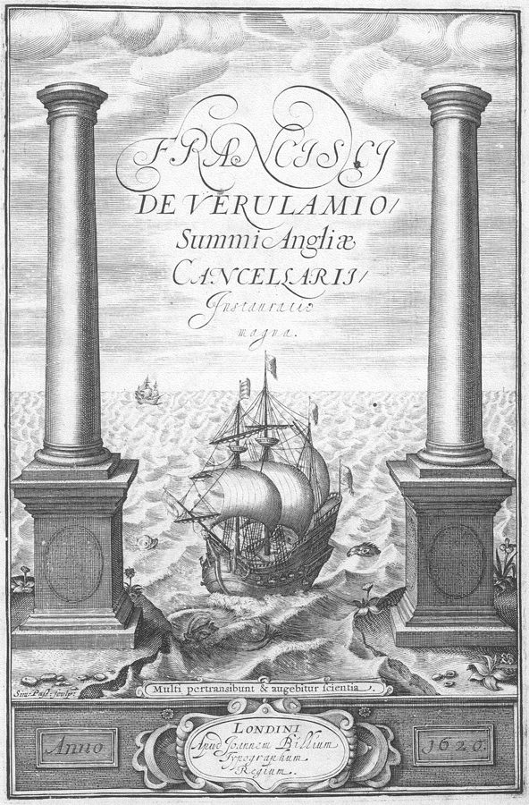

这一页在做什么
全书第一章。作者从物理课上的一个小把戏讲起，问：科学凭什么能让我们压过直觉？他回到四百年前的培根，讲培根怎样把「追问事物的本质」换成「看东西怎样相互作用、做实验、为了实用」；再讲休谟挑明的难题：见过一千次的规律，凭什么下一次还成立。读的时候抓两条线：培根留下了什么没解决，作者又怎样把休谟的难题改写成全书要反复用的「隐藏条件」。

1620 年培根《伟大的复兴》（Instauratio Magna）的书名页，《新工具》就印在这本书里。两根柱子常被解作赫拉克勒斯之柱，古人眼里已知世界的尽头，船正驶出去；下面那行拉丁文出自《但以理书》：许多人将来回奔走，知识就必增长。Francis Bacon，公有领域，维基共享资源 读之前：这一页在全书的哪里
导言说，不做实验的社会科学目前对大多数政策做不出可靠的预测，多半要靠多做试验。第一部先退一步问：科学本身是怎样得到可靠的因果知识的？这一章立起两样后面一直要用的东西：重实验、为实用的科学观，和「隐藏条件」。第 2 章开头又提到飞船里的硬币，随后请出波普尔；第 5 章给「因果关系复杂到隐藏条件数不清」起名叫因果密度；第 9 章说，越往人的行为走，归纳问题越要命。
硬币地图是作者特意造的极端例子。他说的是因果关系「足够复杂」时归纳才靠不住（第 38 段），常识里的规则他认为相当可靠。别把这一章读成「归纳从来靠不住」。
见过一千次的因果规律，凭什么相信第一千零一次还成立？如果不能完全相信，它在什么时候最靠不住？
读的时候带着这几个问题。不用先找答案，读完回来对照「检查一下理解」。
培根反对经院哲学，作者说主要理由是它错了，还是别的？§1
作者夸培根预见了许多事，又说他在哪一件上失败了？§1
作者说全书讲的「归纳问题」是什么意思？它和休谟原来的问题一样吗？§2
在什么情况下，归纳问题会从哲学家的闲谈变成实际的麻烦？§2
这一页的路线
开头三段是个小故事：在物理教室里让铁球荡回鼻尖前停住，立起「科学能压过直觉」这个题。§1 往回倒四百年：先用几段讲培根反对的经院哲学，再引培根的批评、讲他的诊断和新方法；第 20–24 段一段一件，列他预见的五件事，像一张清单；第 26–28 段突然转身，说培根讲不清怎样从观察推到规律。§2 接过这个难题：先引休谟谈面包的名段，作者再用自己的话重说一遍，给全书的「归纳问题」下定义；然后用飞船里的硬币和太阳说明它什么时候成了实际问题，又造了一个思想实验：硬币在美国有的地方落、有的地方不落。最后一段把它改写成「隐藏条件」，往社会科学一指就收住。§1 引文多、文风古旧，读不动可以先读 §2。
§1 摆锤与培根的新工具
摆锤 压过直觉 第 1–3 段
经院哲学 和培根的诊断 第 4–17 段
培根的新方法 预见的五件事 第 18–25 段
未解的难题 怎样归纳 第 26–28 段
§2 休谟的面包和硬币地图
休谟的面包 第 29–34 段
作者的定义 第 35 段
飞船和太阳 第 36–38 段
硬币地图 第 39–41 段
隐藏条件 第 42 段
只是一指：社会科学（第 8、9 章起展开）
本站示意图。上一行是 §1，下一行是 §2，浅色两格是两节各自的落点。§1 的落点是一个问题，§2 接着回答它。 作者落在哪： 靠归纳得来的因果规则只能暂时相信，因为任何规则都可能藏着没写出来的条件。离开常识的地盘，或者因果关系足够复杂时，这就成了实际的麻烦；他预告这正是社会科学的核心难题。
分节地图
这一页是原书第 1 章的两节，粗体是本站给的节名，下面是原书这一节第一段开头的几个词，在 Kindle 里搜它就能跳过去（原书的小标题也在目录里）。每节标了档：「先读」不读就跟不上全书主线，「有空」好看但跳过不丢线。读完打个勾。
摆锤与培根的新工具约 2600 词 To make a point to a … 第 4 段起经院哲学，第 14 段起培根的诊断，第 20–24 段五件事，第 26 段起转向「怎样归纳」，引出 §2。 休谟的面包和硬币地图约 1700 词 Writing a little more than a … 全章最要紧。第 35 段末句是全书「归纳问题」的定义，第 38 段是限定条件，第 42 段改写成隐藏条件。
先用中文过一遍：这一页的概念
先把这一页用到、作者默认你懂的几个概念讲一遍。讲的是概念本身，作者拿它推出什么，读原书时自己看。第 26 段一笔带过的可控实验 、第 37 段的不显然 ，后面的页会讲，点进去看。
§1 归纳 induction 从一个个具体的观察推出一般的规律，叫归纳：见过的天鹅都是白的，于是说「天鹅是白的」。反方向，从一般规律推出具体结论，叫演绎：人都会死，苏格拉底是人，所以他会死。演绎只要前提对、推理对，结论一定对；归纳的结论总比证据说得多，所以总可能错。程序员别和「数学归纳法」弄混，那其实是一种严格的演绎证明。培根说的归纳更具体：他反对两种做法，一是从几个例子一下子跳到最一般的原理，二是把见过的例子一条条列出来就下结论（他叫「简单枚举」）；他主张从大量仔细的事实出发，一级一级往上爬，最一般的结论最后才得出。下图左右对照。
一下子飞上去
最一般的原理
几个例子
一跳
往下推出其余结论
经院哲学的路（第 16 段）
一级一级往上爬（培根）
最一般的公理，最后才到
中间的规律
低一层的规律
大量仔细的观察和实验
培根主张的路（第 18 段）
本站示意图，照培根自己对两条路的描述画。培根没说清的，是右边每往上爬一级，凭什么算爬对了。 在这一页： 第 16、18 段是培根对两条路的描述；第 27 段他批评「简单枚举」，第 41 段作者借「枚举」指每格都试一遍。
§2 归纳问题 problem of induction 休谟问的是：我们凭什么相信没见过的会像见过的一样？回答「因为过去一直这样」，这本身就是从过去推到未来的归纳，绕回了原地。他的结论是，这种相信没法靠推理证明，是习惯在起作用。罗素后来讲过一只鸡：主人天天来喂，它越来越确信明天还有吃的，直到有一天主人来拧断了它的脖子。程序员熟悉的版本：一个函数通过了一千个测试用例，不等于第一千零一个也会通过。哲学上，这个问题至今没有公认的解法；但它不是说归纳没用，日常和科学都离不开归纳，它说的是归纳得来的结论原则上都可能被推翻。作者在第 35 段说，他全书说「归纳问题」，就指「只能暂时相信」这一层意思。
在这一页： 第 29–34 段先引休谟的面包，再把「为什么」一层层追下去；第 35 段末句定下全书的用法。
§2 隐藏条件（作者的用法） hidden conditional 一条因果规则背后没写出来的前提。「水烧到 100°C 就开」默认了海平面附近的气压；到了拉萨（海拔约 3650 米），水大约 88°C 就开了，所以高原上煮面不容易熟。在平原上过一辈子的人，一辈子碰不到这个条件被违反，也就不知道它存在。程序员熟悉的说法是「在我机器上能跑」：代码悄悄依赖了时区、语言设置、某个库的版本，换一台机器才露馅。hidden conditional 是作者自己的叫法，不是通行术语。统计里接近的说法是调节变量（moderator）和效应异质性：同一个处理，在不同的人、不同的地方效果不一样。
规则：水烧到 100°C 就开
没写出来的条件：气压约一个大气压
平原上：条件满足 100°C 开，规则一辈子都对
拉萨：条件不满足 大约 88°C 就开，规则失灵
本站示意图，例子是本站的。条件一直被满足时，它就藏在规则后面；要等走到它不被满足的地方，才看得见。 在这一页： 第 38 段第一次出现，第 39–41 段的硬币地图是它的极端版本，第 42 段用它重述归纳问题；第 7、8、12 章还会回到这个词。
动手：模拟器
先猜：你在一张地图上到处松手放硬币。丢了 100 枚，河东的枚枚都落，河西的枚枚都不落。你会不会说「河东落、河西不落」？再丢几百枚，这条规律还撑得住吗？点「丢 10 枚」「丢 100 枚」验证。
模拟器 硬币落不落 第 39–41 段那个思想实验的小号版本。地图 40×24 格，分 16 个州、64 个县，中间一条南北走向的河。每格放一枚硬币，有的格子会落、有的不落，由「真实规则」决定，做试验的人看不到。你选一条「我的规律」，每丢一枚之前先用它猜一次。先保持默认，点「丢 10 枚」。
怎么看：地图左边是河西，右边是河东，青色的折线是河，灰色细线是州界。每一枚硬币落在随机的一格上，同一格可能丢好几次。蓝格是丢过、落了的，橙格是丢过、没落的，灰格还没丢过；加了框的是第一次猜错的那一格。「地图显示」换成「揭晓真实地图」，没丢过的格子用淡色显出它真实的样子；换成「我的规律猜的全图」，显示你的规律对每一格的猜测。「真实规则」五选一，从简单到复杂，最后一种就是书里的椒盐地图；「处处都落」配上「全都落」，是常识的世界，丢多少枚都对（第 36 段）。三条「我的规律」：全都落；河东落、河西不落；照离它最近的、丢过的格子猜（丢过的格子照记下的结果）。下面四个数依次是：一共丢了几枚，丢过的格子占全图多少；每一枚丢之前先用你的规律猜，猜中了几枚；第一次猜错是第几枚；拿你的规律去猜全图 960 格（包括还没丢过的），猜对百分之几。最后这个数只有模拟器知道，现实里没人知道。
试试看：保持默认（真实规则「河东落、河西不落（藏着例外）」，我的规律「河东落、河西不落」），点 10 次「丢 10 枚」：100 枚枚枚都对。接着一直点「丢 100 枚」，直到「第一次猜错」出现数字，本站验证时是第 506 枚：这就是第 41 段说的，规律一直对，到某一次突然对不上。读下面那段话：那一刻，能解释这次例外、又和之前每一枚都对得上的「除非……」有好几条（本站验证时 9 条），该加哪一条？这是第 41 段的问题。再丢几百枚，候选会变少（本站验证时丢到第 900 枚剩 1 条），剩下的也不一定是真的那条。点「换一批运气」再丢：本站试的 8 批里，第一次猜错最早在第 118 枚，最晚在第 1129 枚。
试试看：把「地图显示」换成「揭晓真实地图」：河东只有 3 格是例外，拿「河东落」去猜全图，猜对 99.6%。规律几乎全对，可它不是真的规则。再把「我的规律」换成「照离它最近的、丢过的格子猜」，「真实规则」依次换成按州、按县、每格各不相同，每种都点 3 次「丢 100 枚」，看最后一个数：本站验证时是 95.7%、90.4%、61.9%，其中约 27% 的格子是丢过、照抄的，没丢过的格子在「每格各不相同」时几乎是瞎猜。规律的颗粒越细，同样多的试验猜得越不准：这是第 39 段从州到县、再到平方英寸的意思。
试试看：接着在「每格各不相同」下点「每格都丢一遍」：全图猜对 100%，可这是逐格记下的清单，不是能拿到别处用的规律（第 41 段的枚举）。再点「过了一秒」：48 格悄悄变了，全图猜对跌到 95%，你记下的地图已经过时；再丢几百枚，又会不时撞上对不上的格子。这是第 41 段末尾和第 42 段：规则可能随时间变，时间本身就可能是一个隐藏条件。
这个模拟器的地图、规则和数字都是本站编的，只为看清道理。书里的地图是整个美国，作者说的翻车在第一万次，这里缩小了很多。
书里的人、研究和背景
按在书里出现的顺序排，标题前是节号。只讲到读懂这一页需要的程度。
§1 两条题词：Emerson 和「哥白尼」第一部开头有两条题词。第一条出自美国作家 Ralph Waldo Emerson（1803–1882），说人生是一堂讲因果的长课。第二条署名哥白尼，中文读者多半一眼认得：它几乎就是《论语·为政》的「知之为知之，不知为不知，是知也」。梭罗 1854 年的《瓦尔登湖》第一章，把几乎一字不差的英文句子记在孔子名下；本站没找到它出自哥白尼的依据，署名哥白尼多半是误传。这句话和全书的调子很合：作者一再讲的，就是知道自己不知道什么。
§1 物理课上的摆锤第 1–2 段的把戏是物理课的经典演示：把铁球拉到鼻尖前松手，球荡出去再荡回来。按能量守恒，它荡回来不会超过松手时的高度，空气阻力还会让它低一点点，所以停在鼻尖前。作者在括号里补了两个条件：别不小心推它一下，别往前凑。本站顺带一提：这两个条件，正是这一章后面要讲的「隐藏条件」的好例子，平时没人写出来，违反了才要命。
§1 亚里士多德和经院哲学经院哲学是中世纪欧洲大学里的主流学问，把亚里士多德的哲学和基督教神学糅在一起。照它的说法，一样东西之所以是这样东西，靠的是它的「实体形式」，一种看不见的本质；解释自然还要问「目的因」：这东西是为了什么。第 6 段的例子出自亚里士多德的《物理学》：门牙尖、后牙宽，正好合用，他认为这不可能只是粒子碰巧排成这样。今天的生物学用自然选择回答「为什么正好合用」，不再需要目的因。
§1 Francis Bacon 和《新工具》
Francis Bacon 的肖像（局部），Paul van Somer 画，约 1617 年，正是他做到大法官前后。Paul van Somer I，公有领域，维基共享资源
《新工具》（Novum Organum）1620 年用拉丁文出版，是培根计划中的大书《伟大的复兴》的一部分。书名冲着亚里士多德的逻辑著作合集《工具论》（Organon）而来：要换一件新的思考工具。培根本人是政治家，1613 年任总检察长，1618 年升任大法官；1621 年被控受贿，认了罪，丢了官，此后专心著述。作者说他不是象牙塔里的哲学家，指的就是做官的这一面。书里的培根引文是 19 世纪的英译，所以读来古旧。
Francis Bacon 1561–1626 英国哲学家、政治家、律师。主张科学从仔细的观察和实验出发、以增进人类的力量和福祉为目的，常被称作经验主义和现代科学方法的先驱。§1 的主角。
§1 《新大西岛》和所罗门之宫第 22 段提到的《新大西岛》（New Atlantis）是培根没写完的乌托邦小说，他死后第二年（1627 年）出版。书里一座海岛上有一所「所罗门之宫」，学者分工合作，有各式各样的实验室，专门研究自然、造出有用的东西。作者说它是今天由国家支持、分科设系的研究型大学的雏形。通常的说法是，它也启发了 1660 年成立的英国皇家学会。
§2 David Hume 和《人类理解研究》David Hume，Allan Ramsay 画于 1766 年，那时他五十多岁。Allan Ramsay，公有领域，维基共享资源 作者引的面包那段，出自休谟《人类理解研究》第四章。这本书 1748 年出版，当时叫《关于人类理解的哲学论文集》，1758 年才改成今天的书名；它是休谟把早年的《人性论》改写得更好读的版本。书里说「比培根晚一个多世纪」：从《新工具》到这本书隔了 128 年。引文是 18 世纪的英文原文，不是译本，所以拼法和用词都旧，词条里收了几个。
David Hume 1711–1776 苏格兰哲学家、历史学家，经验主义的代表人物之一，以对因果和归纳的怀疑最出名；生前更以六卷本《英格兰史》闻名。§2 的主角。
词与短语
按节排，每节前面是分节地图里的节名。标着「每个字都认识」的，是熟词生义、习语和反话，最容易读错。灰色的那几个字是原句里的位置，在 Kindle 里搜它就能找到。
§1 摆锤与培根的新工具
make a point
… To make a point to a friend …
说明一个道理、证明一个看法
不是「做一个点」。to make a point to a friend：为了向朋友说明一件事。
visceral intuition
… our experience and visceral intuition …
出自本能的直觉
visceral 本义「内脏的」，引申为肚子里、本能的反应：明知是摆，身体还是想躲。
substantial form
… The substantial form is what enables …
实体形式（经院哲学术语）
让一样东西成为这样东西的那个看不见的本质，见「书里的人、研究和背景」。
a bunch of gobbledygook
… sounds like a bunch of gobbledygook …
一堆听不懂的胡话
作者先替现代读者吐槽一句，紧接着用 but 替亚里士多德说话：这背后是一个深刻的谜题。口气是「听着荒唐，但不蠢」。
final cause
… what he called a final cause …
目的因
亚里士多德的四因之一：一样东西「为了什么」而存在。
not exactly … but rather
… central argument was not exactly that …
与其说是……不如说是……
全章最要紧的分寸：培根不是说经院哲学错了，而是说它不实用。not exactly 在这里不是「不完全对」，是「重点不在这里」。
out of bounds
… final causes to be out of bounds …
划为禁区、不许碰
本义是球赛里的「出界」：追问目的因的问题，被划到物理学的场地之外。
consequential
… the most consequential insights in human …
影响深远的
是「后果重大的」，不是「随之而来的」。He was correct 加上这一句，是作者全章口气最重的判断。
ivory-tower philosopher
… was not an ivory-tower philosopher …
象牙塔里的哲学家
和中文「象牙塔」一个意思：脱离实际的书斋学者。
attorney general / lord chancellor
… serving as attorney general and lord chancellor …
总检察长 / 大法官
英国的两个高官职位，培根先后做过，见「书里的人、研究和背景」。
take on
… his take on the utility of …
（名词）看法、评价
take 作名词是「看法、解读」，美式口语常见：what’s your take on it?
withering
… achieving practical progress was withering …
尖刻的、让人抬不起头的
wither 是「枯萎」，withering criticism 是把人批得体无完肤。
owns as much
… Celsus ingenuously and wisely owns as much …
（坦率而明智地）承认了这一点
19 世纪英译的旧用法：own 是「承认」，as much 是「这一点」；ingenuously 在这里是「坦率地」，现在多作「天真地」。
leap to conclusions
… therefore leap to faulty conclusions …
草率下结论
常说 jump to conclusions。这是培根诊断的第二样：人爱从数据里看出并不存在的规律。
enshrine
… to enshrine premature theories as comprehensive …
奉为圭臬、供起来
shrine 是神龛：把不成熟的理论供上神坛，当成不能动的定论。
fly at once to
… they flew at once to the …
一下子跳到
培根的比喻：从几个例子「飞」到最一般的结论，中间不踩任何台阶。和第 18 段的「逐级上升」对着看。
hammer at
… Bacon hammered at this point to …
反复强调、一再敲打
像抡锤子一样一下一下砸同一个地方，所以作者说今天读来有点啰嗦。
first glimmerings
… Building upon the first glimmerings of …
最初的一线微光、苗头
proceed as if
… scientists should proceed as if they are …
当作……那样去做
原文 as if 是斜体：科学家在方法上「当作」一切都能还原成粒子加规则，不是宣称世界真的就是这样。理由是能出成果。
true sons of knowledge
… He called such people the …
知识的真正儿子
培根对理想科学家的称呼，原文在引号里。第 4 章第 6 段作者还会借用。
Salomon’s House
… which he called Salomon’s House …
所罗门之宫
培根小说《新大西岛》里的研究机构，见「书里的人、研究和背景」。
experiments of Light / experiments of Fruit
… rather than trying to immediately solve …
光的实验 / 果的实验
培根的说法，在这句前后的两个括号里：「光」是带来认识的实验，「果」是马上带来好处的实验，大致对应今天的基础研究和应用研究。
supple
… he had the supple understanding that …
（理解得）灵活通透
本义「柔软的」。这里是说培根不死板：基础研究和应用研究不是一条单向的流水线。
feed off each other
… interact and feed off each other …
互相滋养、互相借力
feed off 本义「以……为食」，each other 一加，就成了两边互相喂养。
in the negative
… experimental rigor in the negative, by …
从反面（说）
不是「消极地」：培根没正面说严格的实验什么样，而是列出以前的观察缺了什么。
be caricatured
… of theorizing can be caricatured …
被说成漫画式的样子、被夸大
作者在纠正一个常见印象：培根只要实验、不要理论。下一句就说他其实看重两者结合。
impressionistic
… than in Bacon’s somewhat impressionistic …
凭印象的、不精确的
不是「印象派的」：是说培根那句「核实、称量、计数」只是个大概的描述，算不上严格的定义。
dog
… inappropriate generalization would dog them …
如影随形地纠缠
dog 作动词是「尾随、纠缠不放」：不恰当的推广会一直缠着科学家。
resist description
… and resists such algorithmic description …
很难被描述
resist 在这里不是「抵抗」，是「不容易被……」：科学发现的过程很难写成一套按部就班的算法。
somewhat more satisfactorily
… to address somewhat more satisfactorily the …
稍微令人满意一些地
作者的分寸：几百年后的哲学家也只是「稍好一些」地回答了这个问题，不是解决了它。
the logic of scientific discovery
… Karl Popper would come to call …
「科学发现的逻辑」（书名）
波普尔 1934 年用德文出版、1959 年出英文版的书就叫这个名字，原文在引号里。他在第 2 章正式登场。
§2 休谟的面包和硬币地图
matter of fact
… All reasonings concerning matter of fact …
事实问题（休谟的术语）
平时 as a matter of fact 是「其实」。休谟把知识分两类：观念之间的关系（像数学，光靠推理就能确定）和事实问题（要靠经验，比如面包养不养人）。
collateral effects
… Heat and light are collateral effects …
并列的结果（同一个原因造成的两样）
collateral 常见于 collateral damage（附带伤害）。这里是说热和光都是火造成的，彼此并列，看到一样就能推出另一样。
which we have formerly eat
… bread, which we have formerly eat …
我们以前吃过的
18 世纪的用法：eat 在这里是过去分词，相当于今天的 eaten。同一段的 connexion 是 connection 的旧拼法。现在不这么写了。
make no scruple of
… we make no scruple of repeating …
毫不犹豫地（做）
scruple 是「顾虑」。后面的 the experiment 是「尝试」（再吃一块面包），不是实验室里的实验。
it is allowed on all hands
… It is allowed on all hands that …
大家都承认
allow 的旧义是「承认」，on all hands 是「各方、人人」。
sensible qualities
… between the sensible qualities and the …
感官能感知到的性质
sensible 在这里不是「明智的」，是「可感知的」：颜色、重量、软硬。和它对着的 secret powers 是看不见的内在能力（让面包养人的那种）。
for aught we know
… which for aught we know, may …
说不定、就我们所知
aught 是古语的 anything：我们知道的也就这么多，说不定它们只是看上去相像。
ever-receding horizon
… there is an ever-receding horizon of …
永远在后退的地平线
作者的比喻：每回答一层「为什么」，下一层又冒出来，就像朝地平线走，永远走不到。
a priori
… on some a priori belief …
先验的
拉丁文，「在经验之前」：不靠观察、先就认定的信念。
provisional
… this belief must always remain provisional …
暂时的、待定的
全章的关键词：不是「错的」，是「随时准备修改的」。
what I will mean by
… claim is what I will mean by …
我（在本书里）说……，指的是
作者在给术语下自己的定义：全书说 the Problem of Induction，就指这一段前面说的「靠归纳得来的因果信念只能暂时相信」。
with too much time on his hands
… with too much time on his hands …
闲得没事干
字面「手上时间太多」。这类担心听着像是闲人的玄想。
airy-fairy
… the seemingly airy-fairy nature of …
虚无缥缈、不着边际的
英式口语，带点调侃。
do it for him
… before his readers could do it …
抢在读者（嘲笑他）之前
it 指前面的 ridicule：休谟先自嘲这种担心听着很玄，免得读者来笑他。
would not be well advised to
… you would not be well advised to …
（这样做）可不明智
be well advised to do 是「最好去做」，否定就是「最好别」：日常生活里不假定引力存在，那可不明智。
large body
… spacecraft far from any large body …
大质量的天体
body 在这里是「天体、物体」，不是「身体」。远离天体、又不旋转的飞船里，硬币松手会停在半空。
implode or disintegrate
… probably will either implode or disintegrate …
向内塌缩或者解体
注意作者用了 probably。今天天文学的说法：大约 50 亿年后太阳膨胀成红巨星，外层散去，核心缩成白矮星。这不影响他的论点。
the arena in which common sense works
… depart from the arena in which …
常识管用的地盘
arena 本义竞技场，这里是「范围、领域」。
the here and now
… applied to the here and now …
此时此地
和前一句的「远方的太空和遥远的时间」对着说：不用去太空，眼前的事也会碰到隐藏条件。
sufficiently complex
… causal relationships are sufficiently complex …
（因果关系）足够复杂（时）
全章最要紧的限定词：作者没说眼前的归纳总是靠不住，只说因果关系「足够复杂时」才靠不住。
salt-and-pepper map
… We would see a salt-and-pepper map …
黑白碎点交错的地图
salt-and-pepper 本义「椒盐色」，形容黑白细点混在一起，像花白的头发。
literally infinite
… possible hidden conditionals, is literally infinite …
真的是无穷多
口语里 literally 常被拿来加强语气，这里用的是本义「照字面」：候选的条件确实无穷，不是夸张。
omniscient interlocutor
… assurance from an omniscient interlocutor …
全知的对话者
思想实验里那个替你规定好条件的人（比如告诉你格子都是一平方英寸）。现实里没有这个人。第 3 章第 5 段作者还会用这个说法。
can be restated usefully as
… Induction can be restated usefully as …
可以换一个好用的说法，重述为
注意 usefully：作者承认这是为了好用而做的重述。
always present philosophically
… conditionals is always present philosophically …
在哲学上永远存在
和第 37 段的 practical problem 对着读：哲学上这个问题一直都在，实际中只在某些情况下才咬人。
值得停下来的句子
Bacon’s central argument was not exactly that this was wrong, but rather that it was impractical.— §1 第 7 段。本站译：培根的核心论点，与其说是这一套错了，不如说是它不实用。
这句话的分量全在 not exactly … but rather 上。读快了，会以为培根推翻了亚里士多德；作者说的是，培根没去争「事物有没有本质和目的」，只是说追问这些出不了成果，干脆别问。这是全书第一次出现「有用」压过「真」的思路：第 3、5 章作者说科学理论「真」，指的是它能让我们做出可靠、有用的预测，不管它在哲学上是否符合实在，根子在这里。
Inductive reasoning applied to the here and now becomes unreliable if the actual causal relationships are sufficiently complex.— §2 第 38 段。本站译：如果实际的因果关系足够复杂，用在此时此地的归纳推理也会变得靠不住。
这是一个条件句，关键词是 if 和 sufficiently。作者没说归纳靠不住，只说「足够复杂时」靠不住；多复杂算「足够」，这一章没回答，要等第 5 章的因果密度和第 9 章的社会科学。把这句读成「归纳不可靠」，就把作者的论点说过头了。
读完：作者到底说了什么
读完这一页的几节再看。下面是作者在这几节里的论点，由本站按论点重新组织，不按原书的顺序；每条下面是依据所在的段落，拿不准就回书里那几段再读一遍。
科学的力量来自方法；培根的贡献是换了问题，而不是驳倒了旧学问 作者说科学知识是由一套方法定义的。培根没有说经院哲学错了，而是说追问本质和目的因不实用，该划出物理学；科学家只问东西怎样相互作用，当作一切都能还原成粒子加规则，为的是能出成果。作者认为培根这一点说对了，影响极其深远。
§1 第 4、7、20 段 培根预见了科学的许多样子，却没说清怎样从观察得出规律 作者列出培根预见的五件事：只看物体怎样相互作用、科学家的心态、分工协作、基础和应用研究互相喂养、实验为先。但培根提出的具体方法失败了，科学家实际上没用过；怎样从一个个观察可靠地推到一般规律，他说不清，几百年后的哲学家也只是稍好地回答了。
§1 第 19–28 段 靠归纳得来的因果规则只能暂时相信，这就是全书说的「归纳问题」 作者借休谟的面包说：没见过例外，不等于不会有例外。用更深一层的科学解释也只是把「为什么」往后推一层，最后总要落在某个先验信念或归纳上。他在第 35 段明说，全书讲「归纳问题」就是这个意思。
§2 第 31–35 段 离开常识的地盘，或者因果关系足够复杂时，它才成为实际问题 作者承认，硬币会落、太阳会升这类常识，在大多数人的经验里相当可靠。只有走到远方（飞船里的硬币），或者眼前的因果关系足够复杂（硬币地图），隐藏条件才会露出来；后一种情况下候选条件无穷多，枚举也只在思想实验里管用，规则还可能随时间变。
§2 第 36–41 段 归纳问题可以重述为「任何规则都可能藏着隐藏条件」 第 42 段把它改写成：任何目前被认为成立的因果规则，都可能有隐藏条件。哲学上这个问题永远存在。作者预告：因为社会科学研究的现象很复杂，它的一个推广版，是社会科学建立有用预测规则的核心实际难题，书的后面会展开。
§2 第 42 段
合起来： 这一章给全书打了两根桩：科学靠实验、以实用为目标；任何因果规则都可能藏着隐藏条件，因果关系越复杂越难发现。后面讲随机试验、讲社会科学，都是在问：隐藏条件多的地方，我们还能知道多少。
对照今天
这本书 2012 年出版。下面挑出这一页里能被后来的研究检验的说法，分「书里 / 当时 / 今天」三栏，并给一个结论。结论判的是标题里「书里的说法：」后面那一句。全书的这一节汇总在对照今天 。
成立 后来的研究支持这句话。部分成立 大方向对，细节或适用范围要改。被改写 后来的研究推翻了它，或者换了一种说法。有争议 学界至今没有定论，两边各有代表性的研究。书里的说法：因为研究的现象复杂，「规则可能藏着隐藏条件」的推广版，是社会科学建立有用预测规则的核心实际难题
书里 第 42 段的预告。这一章只是一指，论证在第 8、9 章以后。
当时 学界已在争论随机试验的结果能不能搬到别处（外部效度），作者是怀疑的一方；心理学的大规模复现项目要到 2015 年才发表结果。
今天 推广难得到了证实：Eva Vivalt 汇总了大批发展项目的评估结果，发现同一类项目换个地方、换个执行者，效果差别很大，政府来做的往往不如研究者的小规模试点。但复现危机暴露了另一个同样要命的问题：不少发表的效应，在原样的条件下也重复不出来。核对于 2026-10。依据：Vivalt，《欧洲经济学会杂志》18(6)，2020；Klein 等，Many Labs 2，Advances in Methods and Practices in Psychological Science，2018。
另一边 Many Labs 2 把 28 个心理学效应放到 36 个国家和地区的约 125 个样本里同时重做，发现效应大小的差别主要取决于效应本身，而不是在哪儿、对谁做：常被拿来解释复现失败的「隐藏的调节因素」，在这批效应上没得到多少支持。
书里的说法：科学发现的过程很难描述，不容易写成一套按部就班的算法
书里 培根想给「从观察推出规律」定一套程序，没有成功；作者说这个过程很难描述，抗拒算法式的描述（§1 第 28 段）。
当时 机器学习已能从数据里学出预测规则，但多用在广告、搜索这类商业问题上；深度学习的突破那一年才刚开始。
今天 在边界清楚、数据充足的问题上，算法已能从大量观察里学出科学上有用的预测规则：AlphaFold 预测蛋白质结构，它的两位开发者分得 2024 年诺贝尔化学奖的一半。但这些是为一个问题专门训练的模型，不是培根想要的那种通用程序；它们也躲不开隐藏条件：数据的分布一变，准确率就明显下降，机器学习里叫分布偏移。核对于 2026-10。依据：诺贝尔奖官网 2024 年化学奖新闻稿；Koh 等，WILDS，ICML 2021。
本站怎么看
读完作者的论点，再看它站不站得住。每一块摆出三样：主流怎么看，作者怎么看，本站的评论。最后一句是本站对这一页的总体判断。
作者的「归纳问题」，和休谟的是一回事吗
主流看法： 哲学界通常把休谟的问题理解为：归纳推理能不能得到理性的辩护？任何辩护要么绕回归纳本身、要么站不住，至今没有公认的解答。Nelson Goodman 在 1950 年代提出「新归纳之谜」：同一批翡翠都是绿的，既支持「翡翠是绿的」，也支持一个怪谓词「绿蓝」（某个时刻以前被看到的是绿的，之后才看到的是蓝的），问题变成了该把哪一种规律往下推。
作者的看法： 靠归纳得来的因果信念只能暂时相信（第 35 段）；可以改写成任何规则都可能藏着隐藏条件，时间本身也可能是其中之一（第 42 段）。
本站的评论： 作者明说这是「我在全书里的用法」，这个改造很实用，更像统计里的调节变量和效应异质性，而不是哲学课上的辩护问题。他说的「时间可能是隐藏条件」，和 Goodman 的谜题有相通之处。读者拿这个词和别人讨论时，说明是作者的意思，免得两边各说各话。
硬币地图是不是把归纳说得太悲观了
主流看法： 机器学习里有一条「没有免费的午餐」定理（Wolpert，1996）：如果对规律的样子不作任何假定，那么在所有可能的规律上平均，任何学习方法猜没见过的数据都不比别的方法强。反过来说，归纳在物理学和日常生活里好用，是因为真实世界的规律有结构：连续、稳定、背后有可以研究的机制。
作者的看法： 常识的规则在大多数人的经验里相当可靠（第 36 段）；只有因果关系足够复杂时，眼前的归纳才靠不住（第 38 段）；硬币地图是一个假设的例子（第 39 段）。
本站的评论： 作者的限定词都在。硬币地图是故意造的最坏情形，相当于那条定理里「没有任何结构」的世界；模拟器里也看得到，按州分的规律丢三百枚就猜得很准，每格各不相同就只能照抄。真正要争的是：人和社会的因果关系离哪一头更近？这一章只提出问题，论证在第 5、9 章，读到那里再判断。
培根真是现代科学的先知吗
主流看法： 科学史学者一般承认培根影响很大，英国皇家学会的早期成员把他奉为旗帜。但他有多看重数学、他的方法有没有人真用，学者说法不一：老一辈常说他低估了数学，近年有研究（如 Giuliano Mori 在《英国科学史杂志》上的文章）认为他的态度复杂得多。
作者的看法： 培根的洞见是人类史上影响最深远的之一（第 7 段），他的预见惊人地有洞察力（第 19 段）；但他的具体方法失败了，没被科学家实际用过（第 28 段）。
本站的评论： 作者两头都说了，这是公道的地方。但整体口气是回头看的：拿今天科学的样子去对，挑出培根说中的部分。这不算错，读的时候知道它是一种讲法就行。和全书更相关的是第 28 段：从观察到规律，没有现成的程序可走。这和作者后面推崇试错、不信「设计好的方案」是一脉的。
本站的总体看法： 这一章是科学哲学的铺垫，讲得清楚，限定词也守得住。最值得带走的是「隐藏条件」这个说法，和第 38 段那个条件句：因果关系足够复杂时归纳才靠不住。打折扣的地方：培根被写得有点像先知；作者的「归纳问题」是他自己的改造，不等于休谟的原意。社会现象复杂到什么程度，要看后面的章节拿出什么证据。
检查一下理解
先在心里答，再点开。答错的那题，回书里把对应那一节再读一遍。
1.（§1）作者说培根反对经院哲学，主要是因为它错了吗？ 不完全是。作者说培根的要点在不实用：追问本质和目的因出不了成果，该把它们划出物理学，科学家只研究东西怎样相互作用。
2.（§1）作者说培根主张科学家「当作」唯物还原论者去做研究。这个「当作」要紧在哪？ 培根不是在宣称世界本来就只是粒子加规则，而是说这样做研究能出成果。理由是实用，不是哲学上更对。
3.（§1）培根预见了很多，作者说他在哪件事上失败了？ 他想定一套从观察推出一般规律的具体程序，没有成功，科学家实际上没用过。怎样从个别观察可靠地推到一般规律，他说不清。
4.（§2）面包的例子里，「现代化学已经知道面包里哪些成分养人」为什么解决不了问题？ 化学的解释本身也是靠反复的实验归纳出来的；再往下一层解释，还是同样的问题。每回答一层「为什么」，最后总要落在某个先验信念或归纳上。
5.（§2）「硬币松手会落」这条常识，在什么情况下会失灵？这说明了什么？ 在远离大天体、不旋转的飞船里，硬币会停在半空。规则里藏着一个没写出来的条件：附近要有显著的引力。平时这个条件总被满足，所以看不出来。
6.（§2）硬币地图里，假如第一万次才第一次碰到例外，为什么很难修好你的规律？ 能解释这次例外的候选条件无穷多（雨量、人口密度、红头发的人……），每个都和之前的观察对得上；就算碰巧找对了，也不知道将来会不会再被推翻。
7.（§2）同样丢一千枚硬币，规律按州分，和按平方英寸分，哪一种你更可能猜对没丢过的地方？ 按州。每个州多半都丢到了不少枚，没丢过的地方照同一个州的结果猜，多半对；按平方英寸分，一千枚只碰到极小一部分格子，没丢过的地方无从猜起，只能每格都试，也就是枚举。
想一想：你写的代码，或者你信的某条经验（「这个接口从来没超时过」「周一的流量总是最高」），背后藏着哪些没写出来的条件？哪一天它们会被违反？
精彩回顾
读过又忘了，从这里想起来。挑的是这一页最值得记住的故事、人和说法，不按原书顺序；每条后面是节号，想细看就回书里那一节。全书各页的这一节都收在全书回顾 。
一句话： 任何靠归纳得来的因果规则，都可能藏着没写出来的条件；因果关系越复杂，这些条件越难发现。
铁球停在鼻尖前 作者在空荡的物理教室里让铁球荡回来，硬撑着不躲。明知是摆，身体还是想躲：科学能在决定的那一刻压过本能。
§1 不是错，是没用 培根反对经院哲学，作者说要点不在它错，而在它不实用：别问东西「为了什么」，只问它们怎样相互作用。
§1 面包凭什么养人 休谟问：吃过的面包都养人，凭什么下一块也养人？作者说，靠归纳得来的因果信念永远只能暂时相信。
§2 飞船里的硬币 「硬币松手会落」藏着一个条件：附近得有显著的引力。离开常识的地盘，隐藏条件才露出来。
§2 椒盐地图 设想硬币在有的地方落、有的不落，规则复杂到第一万次才露馅。能解释例外的条件无穷多，最后只能每格都试一遍，而且试完也不保险。
§2